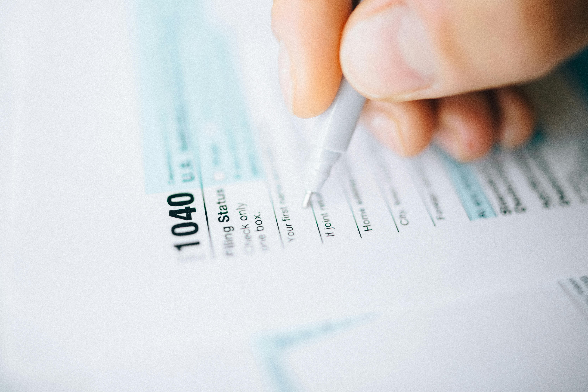

地方紛訂淨零條例 北市目標2030年減碳4成
繼高雄市之後，台北市淨零排放管理自治條例也獲行政院核定，北市副市長林奕華說，前天收到行政院公文，預定明年一月實施，北市減碳目標為二○三○年減碳百分之四十，超越中央百分之廿四正負一的目標，二○四○年減碳百分之六十五、二○五○年達到淨零碳排。 繼高雄市之後，台北市淨零排放管理自治條例也獲行政院核定，北市副市長林奕華說，前天收到行政院公文，預定明年一月實施，北市減碳目標為二○三○年減碳百分之四十，超越中央百分之廿四正負一的目標，二○四○年減碳百分之六十五、二○五○年達到淨零碳排。 繼高雄市之後，台北市淨零排放管理自治條例也獲行政院核定，北市副市長林奕華說，前天收到行政院公文，預定明年一月實施，北市減碳目標為二○三○年減碳百分之四十，超越中央百分之廿四正負一的目標，二○四○年減碳百分之六十五、二○五○年達到淨零碳排。